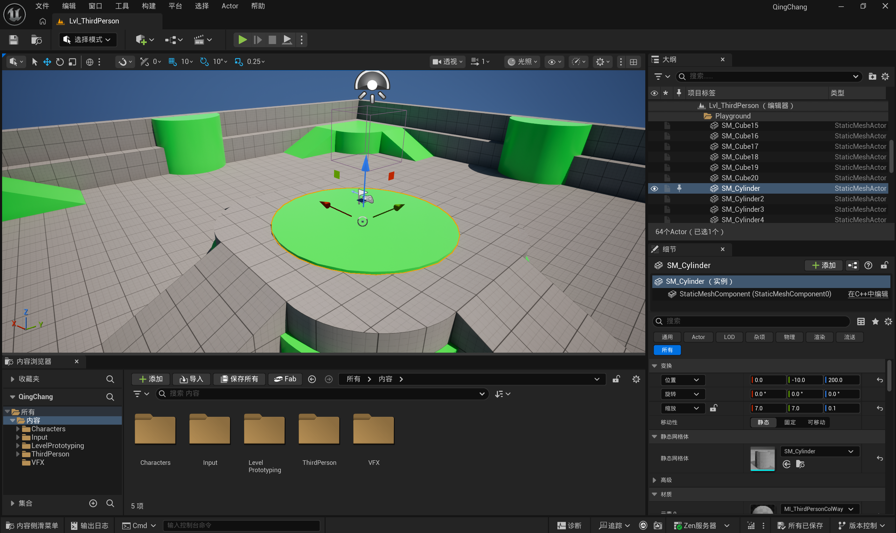
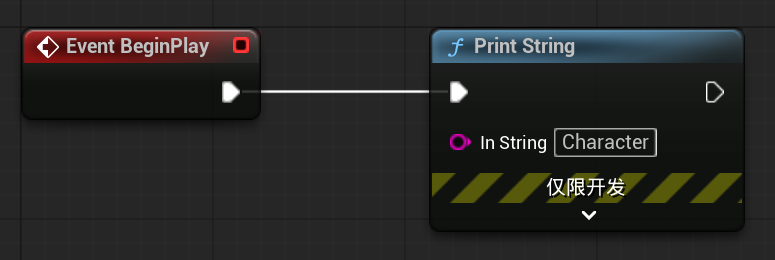

用虚幻引擎
做一局小游戏
从编辑器界面到 C++ 源码，把一局第三人称小游戏讲透。
一条线，把界面、循环和源码读完
顺序不跳步：先能在编辑器里看懂，再补坐标与循环，然后从面向对象进 C++ 语法，最后落到 UEC++ 和 Gameplay 框架。开发演示放在课件之后。
课件之后：现场演示用 AI 在 UE 里做游戏，单独一场，不占课件时间。
编辑器全景：先认六个区域
菜单栏下命令，视口里看和动，右侧查选中对象，下方找资产。

选中一个物体，三处同时说话
以截图里的 SM_Cylinder 为例：大纲里点名，视口里框住，细节里列出属性。
大纲：它在名单里
视口：它被框住了
细节：它是这个实例
大纲和视口里这个 SM_Cylinder 是摆进关卡的一份拷贝。改它，只影响这一个。
内容浏览器里的 SM_Cylinder 是模板。改资产，用它的实例都会被影响。
视口：右键走位，W/E/R 改
不背快捷键，先记六个动作。每个都在视口里试一遍，再进入坐标。
Play 时改的是运行中的副本；按 Esc 回到编辑，关卡里原来的摆放还在。
2D 坐标：屏幕和数学课不一样
同样是 X / Y，屏幕的 Y 朝下，数学课的 Y 朝上。做 HUD 先认原点。
原点在左上角
原点可放在任意处
记住一句：屏幕坐标的 Y 朝下，数学坐标的 Y 朝上；同一个“向上”，数字可能是变小而不是变大。
从 2D 到 3D：多出来的是高度
2D 只有长和宽；把同一个平面抬高，就多出高度。UE 把这个方向交给 Z。
屏幕的 Y 是像素行号，UE 的 Z 才是高度。两套坐标不能直接相加。
别直接套：从 2D 到 3D 不是把屏幕坐标加一轴；世界坐标有自己的朝向和单位。屏幕的 Y 朝下，UE 世界的 Z 才朝上。
3D 坐标系：UE 的左手系
X 前、Y 右、Z 上。站在角色背后看：X 指向远处，Y 指向右手边，Z 指向头顶。
- X 朝前：角色面朝的方向（UE 红色）
- Y 朝右：角色右手边（UE 绿色）
- Z 朝上：跳跃、高度（UE 蓝色）
- 单位是厘米：角色约 180，地板一格 100
- 左手系：俯视时 X 朝上、Y 朝右、Z 指向你
判断方法：看视口左下角的轴指示器，红 X、绿 Y、蓝 Z；它随视角转，但世界方向不变。选中角色时，脚下的红色箭头就是它的前方。
Transform：位置、旋转、缩放，各管一件事
UE 里每个 Actor 都挂着一份 Transform。它不是三个孤立数字：谁相对谁、单位是什么、改的是 Actor 还是组件，决定了你写出来的移动对不对。
FVector(X, Y, Z)
单位厘米；Z 是高度。世界坐标是绝对位置，相对坐标是“相对父级”。
SetActorLocation( FVector(0, 0, 100)); AddActorWorldOffset( FVector(0, 0, 50)); AddActorLocalOffset( FVector(100, 0, 0));
100 cm = 1 m；角色身高约 180 cm。
FRotator(Pitch, Yaw, Roll)
单位度。构造顺序是 Pitch、Yaw、Roll，不是 X、Y、Z。
SetActorRotation( FRotator(0, 90, 0)); AddActorWorldRotation( FRotator(0, 15, 0)); GetActorForwardVector();
Yaw 90° 让角色从 +X 转向 +Y。
FVector
三轴独立；负缩放会翻转法线和碰撞，游戏里尽量别用。
SetActorScale3D(FVector(2, 2, 2)); GetActorScale3D();
碰撞体也会缩放，不是只把模型拉大。
同一个“向前”，可能是两个方向
- 改谁？Actor 的整体 Transform，还是某个 SceneComponent？
- 相对谁？World 是绝对；Relative 是相对父组件。
- 哪个轴？Forward / Right / Up 会随旋转变；世界 X/Y/Z 不变。
- 用哪个入口？
SetActorLocation传送；AddActorWorldOffset世界轴移动；AddActorLocalOffset自身轴移动；SetActorTransform整体替换。 - 最容易踩的坑：把 World 当 Relative，父级一转，子物体就飞。
组件挂点：枪口、相机、血条通常挂在 Actor 下。改 RelativeLocation 只动挂点；改 Actor 的 Location 会带着整棵组件树一起动。
Pitch / Yaw / Roll：旋转还要变成方向
旋转不只是让模型转个身。角色往哪走、准星往哪打、相机怎么倾斜，最后都要落到前向、右向、上向三个单位向量上。
绕 Y 轴。正 Pitch 抬头；相机、瞄准常用。
绕 Z 轴。正 Yaw 向右转；角色转身主要靠它。
绕 X 轴。角色通常保持 0；飞行、载具、相机才用。
前向、右向、上向都是单位向量
FVector Fwd = GetActorForwardVector(); FVector Right = GetActorRightVector(); FVector Up = GetActorUpVector(); // 从 A 看向 B FRotator Look = (B - A).Rotation(); SetActorRotation(Look);
| 场景 | 做法 |
|---|---|
| 角色转身 | 只改 Yaw，Roll 保持 0 |
| 看向目标 | (Target - Self).Rotation() |
| 平滑转头 | RInterpTo 或 FQuat::Slerp |
| 相机倾斜 | 给 Roll，别给角色 |
FRotator(Pitch, Yaw, Roll)，和 FVector(X, Y, Z) 不是同一个顺序。读代码先看参数名，不要按位置猜。
FRotator Now = FMath::RInterpTo(
GetActorRotation(), Target,
DeltaTime, 8.f);
SetActorRotation(Now);
先算 Target - Self 的方向，再 .Rotation()；不要直接改模型的正前方，也不要在每帧里重复 Cast。
身体和相机分开：第三人称常见做法是身体只吃 Yaw，相机再叠 Pitch；把 Pitch 写进角色，模型会跟着上下点头。别把模型的正前方硬编码：角色朝向用 GetActorForwardVector()；如果模型导入时朝向不对，在模型或组件上修，不要把偏移写死进每一个移动公式。
射线检测：起点、方向、通道，最后拿到 FHitResult
准星射击不是“点一下敌人”，而是从相机沿视线发一条线，问引擎：这条线先撞到谁？
Start 起点、End 终点（或方向 × 长度）、TraceChannel、QueryParams（忽略谁、要不要复杂碰撞）。
bBlockingHit：有没有被挡住GetActor()/GetComponent()：撞到谁ImpactPoint/ImpactNormal：打在哪、朝哪Distance/BoneName：多远、哪根骨骼
一句话：起点 + 方向 + 通道 = 一个 FHitResult。射线、球体、多段命中都是这个模型。
FHitResult Hit;
FCollisionQueryParams P;
P.AddIgnoredActor(this);
const FVector Start = GetActorLocation();
const FVector Dir = GetActorForwardVector();
const FVector End = Start + Dir * 5000.f;
const bool bHit = GetWorld()->LineTraceSingleByChannel(
Hit, Start, End, ECC_Visibility, P);
| 查询 | 典型用途 |
|---|---|
| LineTraceSingle | 点射、视线判断 |
| SphereTraceSingle | 近战、弹道宽容 |
| LineTraceMulti | 穿透、收集多个目标 |
| Visibility / Camera | 看得见 / 只挡镜头 |
| Block / Overlap / Ignore | 碰撞响应：挡住 / 穿过但报告 / 完全忽略 |
一帧不是“画一张图”，是一条完整流水线
60 fps 就是每秒跑 60 轮：收输入、跑逻辑、算物理和动画、提交渲染、显示。轮与轮之间没有“等一等”，只有下一帧的预算。
Game 卡住，Frame 一定卡；GPU 慢则 GPU 数高。不要把所有“卡”都归咎于模型面数。
谁接近 16.7 ms，谁就是瓶颈。控制台输入 stat unit 看数。
| stat unit | 看什么 |
|---|---|
| Frame | 整帧总时间 |
| Game | Tick、蓝图、AI |
| Draw | 渲染线程提交 |
| GPU | 显卡实际画多久 |
掉帧
这一帧超预算，画面晚一点出来；操作手感变钝。
卡顿（Hitch）
加载资源、GC、一次性大计算，突然占用几十毫秒。
先看谁慢
stat unit 先定位 Game / Draw / GPU，再决定优化什么；不要一上来就降画质。
Tick 还是事件：别让每帧都做“偶尔才发生”的事
Tick 是每帧都会跑的回调；事件是条件满足才跑。选错的代价不是多写几行，而是每帧都在浪费预算。
void AEnemy::Tick(float DeltaTime)
{
Super::Tick(DeltaTime);
if (!Target) return;
const FVector Dir = (Target->GetActorLocation()
- GetActorLocation()).GetSafeNormal();
AddActorWorldOffset(Dir * Speed * DeltaTime);
}
不需要时 SetActorTickEnabled(false)；低频逻辑可用 TickInterval。
OnComponentBeginOverlap.AddDynamic(
this, &AEnemy::OnOverlap);
GetWorldTimerManager().SetTimer(
FireTimer, this, &AEnemy::Fire, 0.5f, true);
绑定事件的处理函数要标 UFUNCTION()；计时器单位是秒。
| 需求 | 放哪 | 例子 |
|---|---|---|
| 持续变化 | Tick | 追踪玩家、冷却倒计时、每帧更新朝向 |
| 离散响应 | 事件 / 委托 | 按键、受伤、重叠、动画结束 |
| 延迟或周期 | Timer | 0.5 秒后开火、每 2 秒刷怪 |
| 根本不需要 | 关掉 Tick | 静态道具、已死亡敌人 |
DeltaTime：让“每秒 200 cm”在 30 / 60 / 120 fps 下都一样
DeltaTime 是上一帧到这一帧的秒数。所有“按时间变化”的量都乘它；否则帧率就会变成游戏速度。
dt = 0.0167 s
200 cm/s → 3.33 cm/帧
dt = 0.0333 s
200 cm/s → 6.67 cm/帧
dt = 0.0083 s
200 cm/s → 1.67 cm/帧
FVector V = GetActorForwardVector() * Speed; // cm/s
AddActorWorldOffset(V * DeltaTime, true);
Cooldown -= DeltaTime;
if (Cooldown <= 0.f) { Fire(); Cooldown = 0.5f; }
- 卡顿后 dt 变大：先
FMath::Min(DeltaTime, 0.05f)再积分，避免一步穿墙。 - 一帧多次触发：高速移动、连招用扫掠或子步进，别假设一次 Tick 只碰一次。
- 计时用秒：
SetTimer(..., 0.5f, true)是 0.5 秒，不是 0.5 帧。
验证方法：把帧率限制到 30 / 60 / 120，跑同一段路；如果距离不同，说明还有地方没乘 DeltaTime。DeltaTime 不是“手感参数”，是单位换算。
类与对象：图纸和房子
类是图纸，对象是按图纸建出来的那一个。改图纸会影响以后建的房子，已经建好的不会自动变。
图纸
描述“这种对象有什么”：数据（血量、速度）和行为（受伤、开火）。
房子
按图纸创建出来的实例，各自有自己的数据；改一个不影响另一个。
类 vs 关卡实例
内容浏览器里的蓝图或 C++ 类是图纸；大纲里的 Actor 是对象。
class Enemy { public: float Health = 100.f; // 数据 void TakeDamage(float Amount); // 行为 };
Enemy A; Enemy B; A.Health = 50.f; // 只改 A // B.Health 还是 100
记住两句：类定义“是什么”，对象装“这一份数据”；关卡里拖的是对象，改类会影响这一类。
继承与组合：is-a 和 has-a
共同身份往上提，具体能力往下放；不属于“身份”的能力，用组件挂上去。
角色是一种 Pawn
子类自动拥有父类的能力，还能覆写；Character 是一种 Pawn，也是一种 Actor。
角色身上挂着组件
组件负责一块能力，能复用、能拆；敌人和玩家可以挂同一个组件。
什么时候用继承
“它是一种……”：玩家是一种 Character，敌人也是一种 Character。
什么时候用组合
“它有一个……”：有一个血量、一个背包、一个武器；优先组合，别把一切塞进超大类。
同一个类的两种写法
节点连线

适合快速搭逻辑、调参数，看得见。
类声明
UCLASS() class AClearArenaCharacter : public ACharacter { GENERATED_BODY() UPROPERTY(EditAnywhere) float MaxHealth = 100.f; UFUNCTION() void OnDied(); };
UCLASS
告诉引擎：这是一个可认识的类。
UPROPERTY
变量进编辑器、参与回收。
UFUNCTION
函数能被蓝图或引擎调用。
前缀：A Actor，U UObject / 组件，F 结构体，E 枚举，I 接口。对象由引擎回收，不用手动 delete。
一个类，两个文件：.h 说有什么，.cpp 说怎么做
UCLASS() class CLEARARENA_API AClearArenaCharacter : public ACharacter { GENERATED_BODY() public: AClearArenaCharacter(); protected: virtual void BeginPlay() override; UPROPERTY(EditAnywhere, Category = "Health") float MaxHealth = 100.f; };
#include "ClearArenaCharacter.h" AClearArenaCharacter::AClearArenaCharacter() { PrimaryActorTick.bCanEverTick = true; } void AClearArenaCharacter::BeginPlay() { Super::BeginPlay(); UE_LOG(LogTemp, Log, TEXT("MaxHealth = %f"), MaxHealth); }
GENERATED_BODY()
必须放在类体最前面，展开成引擎需要的反射代码。
CLEARARENA_API
模块导出宏，让别的模块能链接这个类；新建类时自动带上。
Super::BeginPlay()
先调父类，再做自己的初始化；漏了父类，很多引擎逻辑不会跑。
改头文件（加变量、改继承）后要重新编译；只改 cpp 里的函数体，可以用 Live Coding 热更。
指针是遥控器，GC 决定谁会被收走
UObject 由引擎管生命周期。你的成员指针加不加 UPROPERTY，决定了引擎知不知道你还在用它。
UPROPERTY(VisibleAnywhere, Category = "Mesh") TObjectPtr<UStaticMeshComponent> Mesh;
TObjectPtr 本质仍是指针；加 UPROPERTY 才算“我持有它”。
Mesh = CreateDefaultSubobject<UStaticMeshComponent>(TEXT("Mesh"));
组件跟 Actor 一起创建、一起销毁；不需要手动 delete。
GC 只看引用
被 UPROPERTY 引用着的 UObject 不会被回收；没人引用的会被收走。
不要 delete
UObject 用 NewObject / CreateDefaultSubobject 创建，不配对 delete。
裸指针会悬空
成员指针一定加 UPROPERTY；临时指针只在本次调用里用。
一句话：普通 C++ 的 new 和 UE 的 NewObject 不是一回事；UE 的对象，交给 UE 管。
代码什么时候跑：四个入口
同一个类，函数写在不同位置，跑的时间完全不同。先认入口，再读实现。
构造里不要找别人
这时 World 还不一定完整，别的 Actor 也可能没生成。构造只做自己的默认值和组件。
BeginPlay 才适合绑定
拿 World、找玩家、绑委托，放这里最稳；记得先调 Super::BeginPlay()。
Tick 要能关就关
PrimaryActorTick.bCanEverTick 打开才跑；不需要每帧的逻辑，用事件或计时器。
EndPlay 做收尾
委托不解绑，对象走了还可能被回调；计时器、音效、UI 同理。
口诀：构造定默认，BeginPlay 做初始化，Tick 做持续变化，EndPlay 收尾。
零基础读 C++：只看四个地方
class AClearArenaCharacter : public ACharacter
它继承谁，大概就知道它是什么。
UPROPERTY(EditAnywhere) float MaxHealth = 100.f;
UPROPERTY 上面的，能在编辑器里看到。
UFUNCTION() void OnDied();
函数名说明它干什么，先不用读实现。
BeginPlay() / Tick() / Fire()
先找它什么时候跑，再读它做了什么。
类型宏：类、结构体、枚举、接口
这些宏把普通 C++ 类型交给 Unreal Header Tool，生成反射、序列化和蓝图支持。
| 宏 | 用在哪 | 关键点 |
|---|---|---|
UCLASS() | UObject 派生类 | 蓝图能不能用，看 Blueprintable |
USTRUCT() | 纯数据类型 | 值传递；必须有 GENERATED_BODY() |
UENUM() | 枚举 | 蓝图用要 : uint8 + BlueprintType |
UINTERFACE() | 接口 | 配一个 I 前缀的实现类 |
UENUM(BlueprintType) enum class EWeaponState : uint8 { Idle UMETA(DisplayName = "待机"), Firing UMETA(DisplayName = "开火") };
USTRUCT(BlueprintType) struct FDamageInfo { GENERATED_BODY() UPROPERTY(BlueprintReadOnly) float Amount = 0.f; UPROPERTY(BlueprintReadOnly) TObjectPtr<AActor> Instigator; };
U 开头的类只是给 Unreal Header Tool 的反射壳；真正的方法写在 I 开头的接口类里。
实现方多继承这个 I 接口，就能被统一调用；完整写法在“接口”一页展开。
底线：UENUM 蓝图用必须 : uint8；USTRUCT 没有 GC；UINTERFACE 的 U 只是反射壳，I 才是真正要实现的方法。
成员宏：变量、函数、事件
类型宏管“这是什么”，成员宏管“编辑器、蓝图和引擎能不能看见它”。
| 宏 | 作用 | 常用写法 | 漏了会怎样 |
|---|---|---|---|
UPROPERTY() | 变量进反射 / GC / 编辑器 | UPROPERTY(EditAnywhere, BlueprintReadWrite, Category="Health") | 编辑器看不到，指针可能被回收 |
UFUNCTION() | 函数暴露给蓝图 / 委托 | UFUNCTION(BlueprintCallable) | 蓝图调不到，AddDynamic 绑不上 |
UDELEGATE() | 单个回调签名 | DECLARE_DYNAMIC_DELEGATE_OneParam(...) | 不能进蓝图，动态绑定失败 |
DECLARE_DYNAMIC_MULTICAST_DELEGATE... | 一对多事件 | ..._TwoParams(FOnHealthChanged, float, float) | HUD / UI 收不到广播 |
DECLARE_DYNAMIC_MULTICAST_DELEGATE_TwoParams( FOnHealthChanged, float, Current, float, Max); UPROPERTY(BlueprintAssignable, Category = "Health") FOnHealthChanged OnHealthChanged;
// 绑定：C++ 用 AddDynamic，蓝图用 Assign OnHealthChanged.AddDynamic(this, &UMyHUD::HandleHealth); // 广播：谁关心谁收到 OnHealthChanged.Broadcast(Current, Max);
编辑器看得到
EditAnywhere 可改；VisibleAnywhere 只读；Category 分组。
蓝图碰得到
BlueprintReadWrite / BlueprintCallable；只读用 BlueprintReadOnly / BlueprintPure。
别忘 AddDynamic
动态委托必须用 AddDynamic / RemoveDynamic，普通 Add 绑不上。
委托：把“发生了什么”广播出去
发生方只管 Broadcast，关心方自己 Bind；两边不需要互相认识。
单播 Delegate
一个事件绑一个回调，适合“只通知一个人”。
多播 Multicast
一个事件绑多个回调：HUD、音效、成就同时收到。
动态 Dynamic
带 Dynamic 的才能进蓝图；C++ 用 AddDynamic 绑定。
DECLARE_DYNAMIC_MULTICAST_DELEGATE_TwoParams( FOnValueChanged, float, Value, float, Max); UPROPERTY(BlueprintAssignable, Category = "Value") FOnValueChanged OnValueChanged; void UMyActor::SetValue(float NewValue) { Value = FMath::Clamp(NewValue, 0.f, Max); OnValueChanged.Broadcast(Value, Max); }
void UMyHUD::BeginPlay() { Super::BeginPlay(); Target->OnValueChanged.AddDynamic( this, &UMyHUD::HandleValue); } void UMyHUD::EndPlay(EEndPlayReason::Type Reason) { Target->OnValueChanged.RemoveDynamic( this, &UMyHUD::HandleValue); Super::EndPlay(Reason); }
动态委托用 AddDynamic / RemoveDynamic，普通 C++ 委托才用 AddUObject；BeginPlay 绑定，EndPlay 解绑——先绑后广播，广播时没人听，这次的值就丢了。
接口：会挨打就行，不必是同一个爹
玩家、敌人、木箱没有共同父类，但只要实现 IDamageable，就能用同一种方式扣血。
UINTERFACE(MinimalAPI, Blueprintable) class UDamageable : public UInterface { GENERATED_BODY() }; class IDamageable { GENERATED_BODY() public: UFUNCTION(BlueprintNativeEvent) void ReceiveDamage(float Amount); };
if (Actor->Implements<UDamageable>())
{
IDamageable::Execute_ReceiveDamage(Actor, 25.f);
}
class AEnemy : public AActor, public IDamageable { GENERATED_BODY() public: virtual void ReceiveDamage_Implementation(float Amount) override; }; void AEnemy::ReceiveDamage_Implementation(float Amount) { Health -= Amount; }
三种写法
- BlueprintNativeEvent：C++ 给默认实现，蓝图可覆写；生成
_Implementation。 - BlueprintImplementableEvent：只有声明，实现在蓝图里。
- 调用：统一走
Execute_；Cast 要求具体类，接口只要求能力。
框架不是五个类，是四层职责
从跨关卡的管理器，到这一局的规则，再到玩家意图和身体。先认层，再认类。
本课只动中间两层：GameMode、GameState、PlayerController、Character；GameInstance 和 World 先知道在哪。
Epic 官方：Gameplay 框架继承树只认三条线
读源码看到 ACharacter、APlayerController、AGameModeBase，先知道它们从哪来。
Info 不是身体
GameMode、GameState、PlayerState 继承 AInfo，负责管理，不参与移动和碰撞。
Controller 也不是身体
它没有模型，负责“谁在操作”；真正在关卡里挨打的是 Pawn。
HUD 属于本地玩家
每个本地玩家一个 HUD，负责把自己的视口画出来。
一局游戏，是谁把谁生出来
GameMode 是关卡里第一个 Actor；它创建 GameState、PlayerState，并在玩家加入时安排 Controller 和 Pawn。
单人游戏也走同一套：你的机器既是服务器也是客户端，GameMode 仍然只在“服务器那一边”。
规则、状态、玩家数据，别混
这三个类都在“管一局”，但一个管规则，一个管全局状态，一个管某个玩家。
口诀：规则找 GameMode，大家看的状态找 GameState，跟人走的找 PlayerState。客户端不要直接改 GameMode，让服务器改，再复制出去。
控制器是意图，Pawn 是身体
按 W 不是直接推模型：输入先到 Controller，再由它控制的 Pawn 去移动。
Controller
非实体 Actor，没有模型；处理输入或 AI 意图。Pawn 死了，它还可以重新占有新的 Pawn。
Pawn / Character
真正在关卡里动、撞、挨打的身体。Character 自带胶囊、CharacterMovement 和骨骼网格。
HUD / Camera
跟着 PlayerController 走，属于“这个玩家看什么”，不是身体的一部分。
重生时换的是 Pawn，不是 Controller；所以“玩家身份”能跨死亡保留。
在这个项目里，改东西先找对门
同一个需求，放错类就会越写越乱。用这张表定位，再去看代码。
| 我想改… | 先去哪 | 说明 |
|---|---|---|
| 开局刷几个怪、什么时候判胜 | GameMode | 规则与流程 |
| 剩余人数、是否结束 | GameState | 大家都能看到的状态 |
| HUD 显示什么 | HUD / UMG | 只读 GameState，不自己存比分 |
| 按键开火、R 重开 | PlayerController | 输入映射绑定 |
| 移动、相机、开火、死亡 | Character | 玩家的身体和行为 |
| 一块可复用的能力（生命、交互、背包） | ActorComponent | 谁需要就挂谁身上 |
| 敌人追人 | Enemy Character | 本课用 Tick；完整项目放 AIController + 行为树 |
| 跨关卡存档、设置 | GameInstance / SaveGame | 本课不用，先知道在哪 |
从一局开始，到一局结束
先规则，后身体；先进场，再 Tick；离开时收尾。
顺序
GameMode 的 InitGame 早于普通 Actor 的 BeginPlay。
BeginPlay 不等于全部就绪
别假设别的 Actor 一定已经初始化完；需要时用事件确认。
Tick 不是默认答案
能放事件或定时器，就别每帧扫；必须 Tick 时乘 DeltaTime。
只追一条链路，就够读懂这局
从按下开火，到血条变化。今天所有代码都挂在这条线上。
输入层
按键 → 函数。先知道谁触发。
逻辑层
射线、伤害、血量。数据怎么变。
表现层
委托 → HUD。屏幕怎么变。
改完代码为什么不生效？
没编译
改的是源码，跑的还是旧模块。
Live Coding 改不了结构
加成员变量、改继承，通常要重启编辑器。
看错输出
日志窗口、输出日志、屏幕打印，先确认看的是哪一处。
演示：伤害 25 → 50，重新编译，两枪变一枪。
今天真正要带走的
会读，比会写更重要。
课件讲完，现场用 AI 把游戏做出来
课件只讲编辑器、游戏循环和代码结构；讲完之后，现场演示从基础工程到一局能玩的小游戏。
建场景
工程、关卡、光照、玩家起点。
提需求
把移动、射击、敌人、胜负拆成几步。
生成 + 编译
AI 写代码，现场编译、看报错。
试玩验收
能跑、能打、能赢，才算过。
具体组件、提示词和任务拆解不在课件里展开，现场按进度演示。
下一节课见
课件到这里。接下来，看 AI 把这一局做出来。